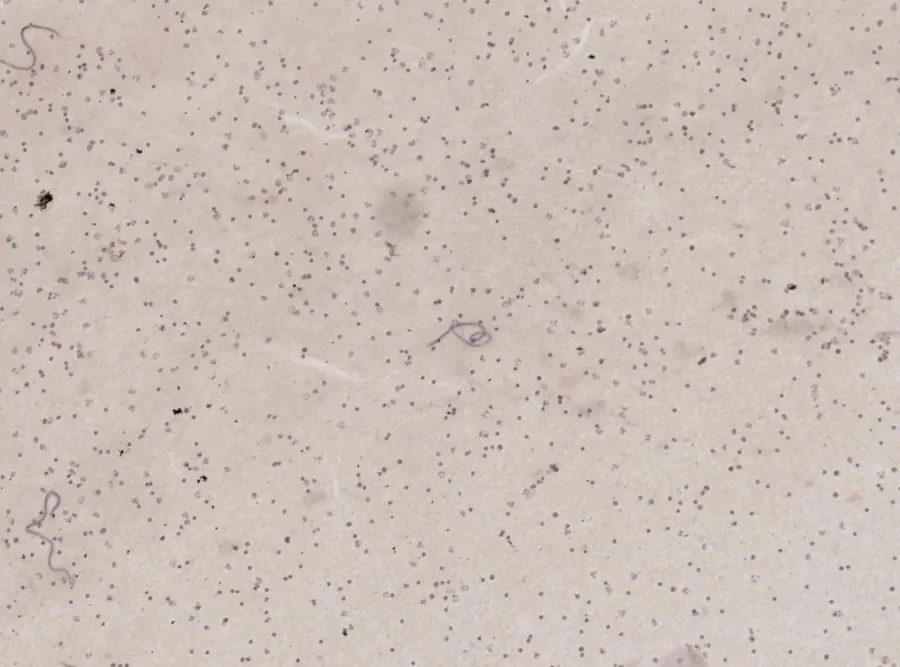

其他无脊椎动物 · 动物界
班氏吴策线虫 Wuchereria bancrofti

由蚊虫传播的丝虫，成虫寄居人体淋巴管，可引起淋巴水肿和象皮肿，是我国曾经流行的淋巴丝虫病的主要病原。
- 分类
- 门线虫动物门纲色矛纲目丝虫目科盘尾丝虫科属吴策线虫属
- 栖息环境
- 人体淋巴管与淋巴结，幼虫在蚊虫胸肌内发育
- 地理分布
- 全球热带与亚热带，中国长江流域及以南地区曾有流行，现已消除
- 保护级别
- 暂无评估
物种志
班氏吴策线虫成虫细长如丝线，雌虫长8–10厘米，雄虫约4厘米，寄居在人体的淋巴管和淋巴结内。雌虫产出的微丝蚴长244–296微米，白天藏在肺血管里，夜间才大量出现在外周血液中，这种现象称为夜现周期性。
当蚊虫夜间吸血时，微丝蚴被吸入蚊胃，穿过胃壁到达胸肌，发育成感染期幼虫；蚊虫再次叮咬人时，幼虫从口器逸出，钻进皮肤，最终在淋巴系统内发育为成虫。成虫阻塞淋巴管，早期引起反复发作的淋巴管炎、发热和精索炎，晚期则出现淋巴水肿、象皮肿和鞘膜积液。预防的关键是防蚊灭蚊：使用蚊帐、纱窗和驱蚊剂，清除积水；疫区还可开展群体服药。我国已于2006年通过消除淋巴丝虫病的认证，但仍需监测输入病例。
形态与习性
- 成虫雌虫8–10厘米，雄虫约4厘米，细长如丝
- 微丝蚴长244–296微米，夜间出现在外周血液中
- 传播媒介库蚊、按蚊、伊蚊等吸血蚊虫
- 感染途径受携带感染期幼虫的蚊虫叮咬
- 症状淋巴管炎、淋巴水肿、象皮肿、鞘膜积液
- 防护蚊帐、纱窗、驱蚊剂，清除积水
- 消除进展中国于2006年通过消除淋巴丝虫病认证
趣味知识
- 微丝蚴白天躲在肺里，夜里才游到外周血中。
- 它靠蚊虫叮咬在人与人之间传播。
- 晚期患者的腿或阴囊会肿成象皮样。